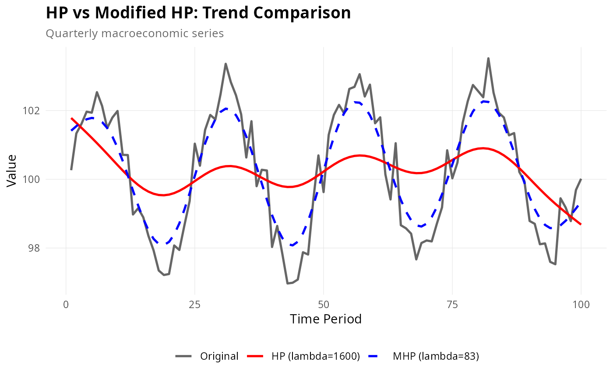

Create a ggplot2 comparison of HP and Modified HP filter trends. Useful for visualizing differences between fixed and optimized smoothing.
Usage
plot_comparison(
x,
frequency = c("quarterly", "annual"),
max_lambda = 100000L,
show_cycle = FALSE
)Details
Creates comparison plots showing: 1. Original series with HP and Modified HP trends overlaid 2. (Optional) Cyclical components from both methods
The plot uses distinct colors and line styles to differentiate methods, with annotations showing lambda values.
Examples
set.seed(123)
# Simulate realistic economic data
n <- 100
base_level <- 100
growth_rate <- 0.5
volatility <- 1.2
y <- base_level + cumsum(rnorm(n, mean = growth_rate / 100, sd = volatility / 100)) +
2.5 * sin(2 * pi * (1:n) / 25) + rnorm(n, sd = 0.5)
if (require(ggplot2)) {
# Basic comparison
plot_comparison(y, frequency = "quarterly", max_lambda = 10000)
# With cycles
plot_comparison(y, frequency = "quarterly", max_lambda = 10000, show_cycle = TRUE)
# Customized plot
p <- plot_comparison(y, frequency = "quarterly", max_lambda = 10000)
p <- p +
ggplot2::labs(
title = "HP vs Modified HP: Trend Comparison",
subtitle = "Quarterly macroeconomic series"
) +
ggplot2::theme(
plot.title = ggplot2::element_text(face = "bold", size = 14),
legend.title = ggplot2::element_blank(),
legend.position = "bottom"
)
print(p)
}
